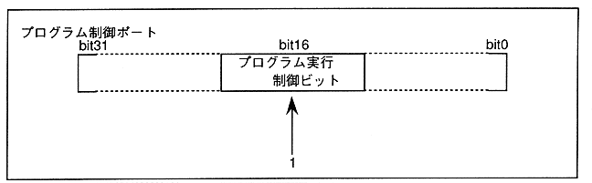

To start DSP program execution, write 1 to bit 16 of the program control port (see Figure 2.21). When the DSP recognizes that it has been written, it starts execution from the address stored in the program RAM address of the program control port. Therefore, the execution start address must be set before writing 1 to bit 16 of the program control port.
Figure 2.21 DSP program execution start control from CPU
